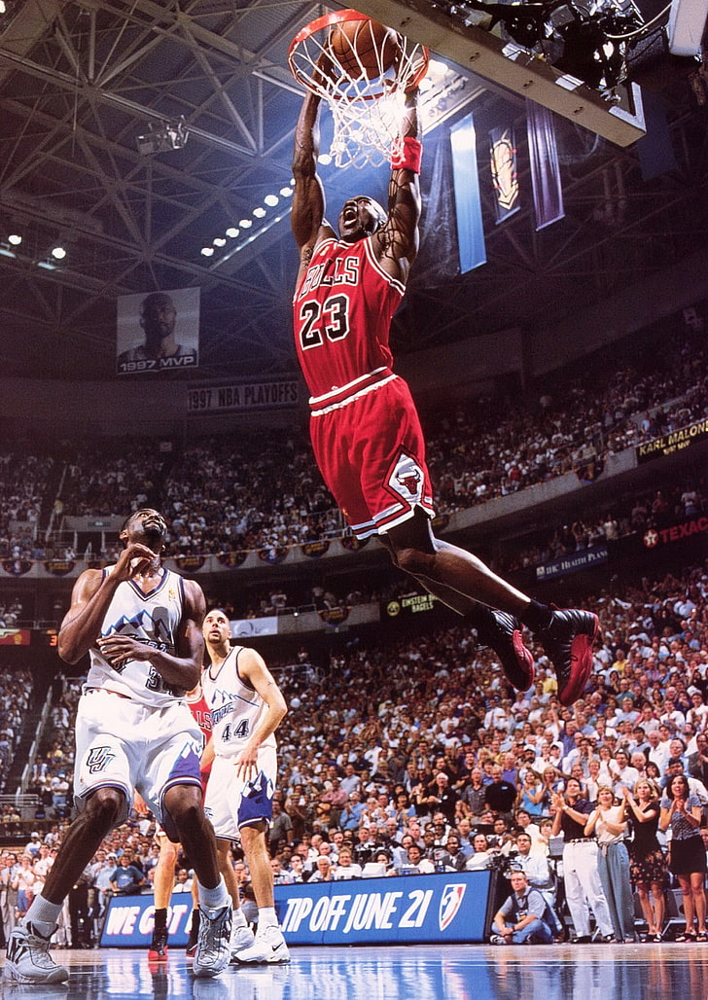

Ik was pas 3 jaar en ik ging elk weekend mee met mijn moeder om naar vader zijn basketbal wedstrijd te kijken. Toen dacht mijn vader dat het mss leuk was om mij eens mee te nemen naar de training die hij elke zondag gaf aan kinderen tot 6 jaar oud. Sinds die dag ben ik basketbal leuk beginnen vinden en het is nooit gestopt.
Na een paar jaar in Hansbeke te basketten en de rest van mijn jeugd bij Gentson door te brengen waren er wat frustraties bij mij ontstaan bij de Gentse club en ben ik naar Racing Brugge getrokken. Hier speel ik nog steeds bij de 2e provenciale heren en over heel Vlaanderen bij de U21.